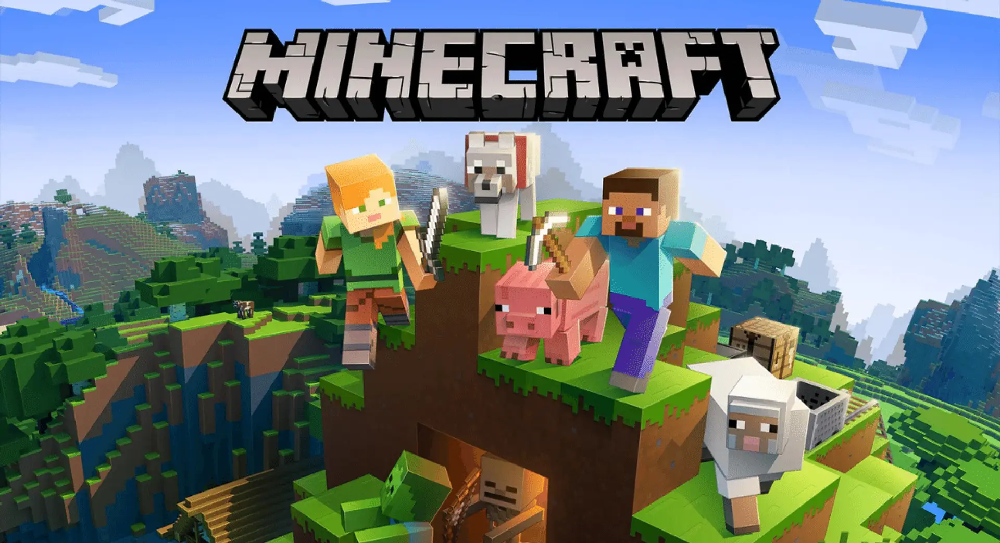
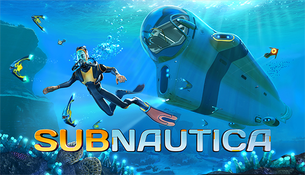
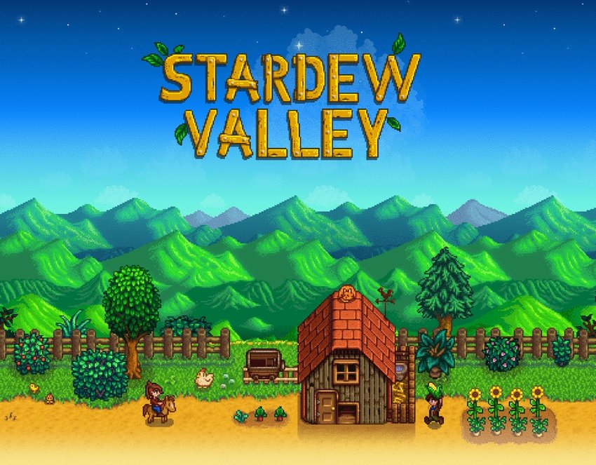

| Sobre mim
Me chamo Renan Catini Amaral, nasci e fui criado no interior de São
Paulo, em Mogi Mirim, e atualmente moro em Alfenas, no sul de Minas
Gerais. Sou estudante de Bacharelado em Ciência da Computação na Unifal-MG, e
confesso que tenho uma “quedinha” por matemática.
Tenho grande interesse em programação, principalmente em C, Python e
Java, e gosto de desenvolver projetos que unam teoria e prática. Além disso, adoro
explorar novas áreas do conhecimento e estou sempre em busca de aprender algo novo.
| Passa Tempos e Interesses Pessoais
Videogames




Não tem como falar dos meus passatempos sem citar os videogames. Gosto especialmente
dos jogos de sobrevivência, aqueles que me fazem usar a criatividade e pensar em
como gerenciar cada recurso. Minecraft sempre teve um lugar especial pra mim, jogo
desde pequeno e adoro construir e explorar. Também curto Subnautica, Stardew Valley
e No Man’s Sky, cada um com seu jeitinho único de aventura e descoberta.
Esportes
Pratiquei poucos esportes até hoje, mas destaco natação e vôlei. Desde recém-nascido
fiz aulas de natação e pratiquei por muito tempo. Também joguei muito vôlei, fazendo
parte do time do Clube Mogiano, onde atuava como líbero por ser ágil e ter ótimos
reflexos. Com eles participei de diversos campeonatos, inclusive regionais. Quando
sobra um tempo, gosto de jogar vôlei de areia também, mesmo sendo baixo, sempre acho
muito divertido. Cada esporte tem seu jeito único de me desafiar e divertir, e adoro
aproveitar esses momentos ativos sempre que posso.
Séries e Filmes
Entre meus interesses em filmes, séries e animes, gosto de explorar mundos e
histórias de todos os tipos. Me atraem aventuras épicas como Interstellar e Jurassic
Park, universos cheios de magia e mistério como Harry Potter, e mundos de fantasia e
suspense como Stranger Things e o anime Frieren. Também não deixo de acompanhar os
universos de super-heróis, tanto da Marvel quanto da DC, e claro, sou fã do imenso
universo de Star Wars, de Andor aos filmes clássicos.
Iniciação Ciêntifica:
• Aprendizado de Máquina na Detecção e Classificação de Arritmias Cardíacas
O principal objetivo do projeto é o desenvolvimento de um sistema de
classificação de arritmias cardíacas baseado em aprendizado de máquina. Este
sistema visa identificar padrões nos sinais de Eletrocardiograma (ECG) para
distinguir precisamente entre diferentes tipos de arritmias e ritmos cardíacos
normais , contribuindo para o avanço de ferramentas de diagnóstico auxiliado por
computador na cardiologia.
Apresentação em banner em Worshop de matemática:
• Impacto da Métrica de Distância na Classificação de Arritmias com o Algoritmo KNN.
O trabalho analisou o uso do algoritmo K-Nearest Neighbors (KNN) para a
classificação binária de batimentos cardíacos em normais e anormais, utilizando
dados do "MIT-BIH Arrhythmia Database". O foco da pesquisa foi avaliar como
diferentes métricas de distância (Minkowski) afetavam o desempenho.
O resultado principal demonstrou que a distância Euclidiana (p=2) obteve o
melhor desempenho. Essa configuração foi priorizada por maximizar a Sensibilidade
(83,74%), crucial para reduzir Falsos Negativos (não detectar uma arritmia
real) em diagnósticos clínicos.